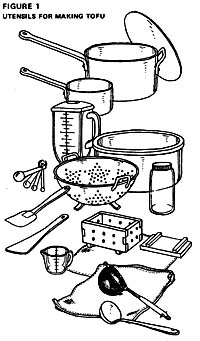
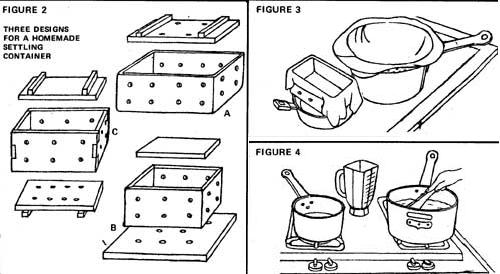
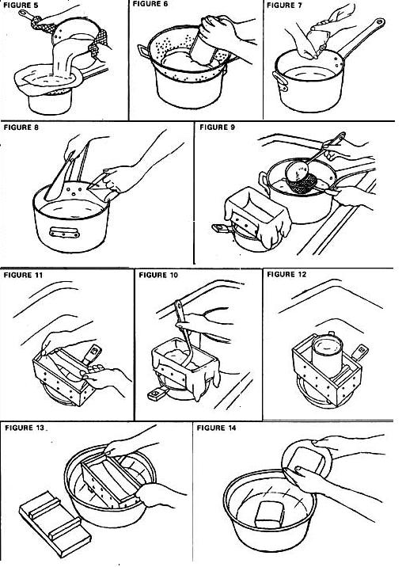

In MOTHER NO. 39, authors Shurtleff and Aoyagi introduced us to the art of cooking with whole soybeans. Below, we are taught how to prepare - and serve - tofu .
From The Book of Tofu, copyright 1975 by William Shurtleff and Akiko Aoyagi. Excerpts used by permission of Autumn Press, Inc.
If you find that fresh tofu is not available at a nearby store, try preparing your own at home using either whole soybeans or powdered soymilk. It's as enjoyable as baking bread ... and considerably faster.
We have found the following recipe, based on the traditional Japanese farmhouse method, to be easy to follow and virtually foolproof. The tofu will be ready 50 to 60 minutes after you start. One pound of soybeans yields about 3-1/2 to 4 pounds of tofu at a cost about one-third to one-fourth that of commercial tofu and less than one-half the cost (on a usable protein basis) of hamburger. Solidified with nigari (the mineral-rich mother liquor that remains after salt is extracted from seawater ... also known as "bittern"), made from soymilk simmered over an open fire (rather than steamed), and served at its peak of freshness, homemade tofu contains a fullness of flavor and subtle sweetness seldom found in even the finest store-bought varieties.
To make fine homemade tofu, you will need the following common kitchen tools (see Fig. 1) and ingredients:
An electric blender, food or grain mill, or meat grinder.
A "pressing pot" with a capacity of 1-1/2 to 2 gallons, or a basin of comparable size.
A 2-quart saucepan.
A wooden spatula, rice paddle, or wooden spoon with a long handle.
A shallow ladle or dipper about 1 inch deep and 3 or 4 inches in diameter, or a large spoon.
A rubber spatula
A sturdy 1 -quart jar or a potato masher
A 1-cup measuring cup
A set of measuring spoons.
A large, round-bottomed colander (that will fit into the "pressing pot").
A flat-bottomed colander ("settling container") preferably square or rectangular.
A shallow fine-mesh strainer or bamboo colander.
(zeru)
A coarsely woven cotton dishcloth, 2 feet square, or a "pressing sack".
A 2-foot square of cheesecloth, or a light cotton dish towel of comparable dimensions.
Two special pieces of equipment, both easy to assemble, will make the work even easier:
[1] Make a "pressing sack" of the coarsely woven cotton dish towel mentioned above, or use a piece of sturdy cotton cloth with about the same coarseness of weave as cheesecloth. Fold the towel or cloth end to end and sew up the sides to form a sack about 15 inches wide and 15 inches deep. Or use a small flour sack with a fairly coarse weave.
[2] The flat-bottomed colander listed above is for use as a "settling container" which gives its shape to the finished tofu. If a 1-quart strainer or small, round-bottomed colander is used in its place, the tofu will naturally be rounded.
The three settling containers shown in Fig. 2 can easily be made at home. Container A is prepared from a 1-1/2-quart wooden, Tupperware, or plastic box with an open top and non-removable bottom. In containers B and C the bottom is removable, allowing for easy removal of the tofu without immersing the container in water. Good dimensions for the container are 5-1/2 inches square by 3 inches deep, or 8 by 4 by 3 inches deep. Use a drill or heated ice pick to bore 3/8-inch-diameter holes about 1-1/2 inches apart in the bottom and sides of the container. Fashion a flat wooden or plastic pressing lid (with or without holes) to fit down inside the rim of the box. Handmade wooden settling containers in the above designs (kitchen or community size) can be ordered from Ganesha, c/o Westbrae Natural Foods, 1336 Gilman St., Berkeley, Calif. 94706.
The soybeans now sold at almost all natural and health food stores, most co-op stores, and many supermarkets will make good tofu. However, to obtain the highest yield, try buying soybeans directly from a tofu shop (if there's one in your area), for they have been carefully chosen by the tofu maker.
The solidifiers; most readily available in the West are Epsom salts, lemon or lime juice, and vinegar. All make delicious tofu, although they are not used in Japanese tofu shops. Japanese-style solidifiers are available from many natural food stores, local tofu shops, Japanese food markets, chemical supply houses (check your phone directory), or your local school chemistry lab. Usable seawater can be retrieved from clean stretches of ocean. Natural nigari is available at some salt refineries and can be ordered from Japanese natural food distributors ... or it can be prepared at home using natural salt. We recommend the use of refined nigari unless the natural nigari is certified to have come from a clean source of seawater. While we believe the nigari-type solidifiers are the easiest to use and result in the best tasting tofu, Epsom salts and calcium sulfate seem to give somewhat higher bulk yields and a softer end product by incorporating more water into the tofu. The yield of tofu solids or nutrients is about the same regardless of the type of solidifier used, except that lemon juice and vinegar give rather small yields. ( NOTE: Calcium sulfate, a fine white powder, is sometimes mislabeled in the West and sold as nigari. The latter usually has a coarse, granular, or crystalline texture ... natural nigari is beige and refined nigari is white.)
The recipe below calls only for solidifier Your choice of solidifier depends upon the type of tofu you want.
FOR SUBTLY SWEET, NIGARI TOFU USE: 1-1/4 teaspoons magnesium chloride or calcium chloride, or 1to 1-1 /2 teaspoons granular or powdered natural nigari, or 1 to 1-3/4 teaspoons homemade liquid nigari, or 1-1/4 to 3 teaspoons commercially prepared liquid nigari, or 1 cup seawater (freshly collected).
FOR MILD, SOFT TOFU USE: 1-1/4 teaspoons Epsom salts (magnesium sulfate) or calcium sulfate.
FOR SUBTLY TART OR SLIGHTLY SOUR TOFU USE: 2-1/2 tablespoons lemon or lime juice (freshly squeezed), or 2 tablespoons (apple cider) vinegar.
1 cup soybeans, washed, soaked in 4 cups water for 10 hours (see graph, MOTHER NO. 39, page 40), rinsed, and drained
11 cups water, approximately
Solidifier
Prepare in advance:
Place pressing pot in sink and set colander into pot. Moisten pressing sack lightly and line colander with sack, fitting mouth of sack around rim of colander. Or line colander with a moistened 2-foot-square dish towel (Fig. 3).
Moisten cheesecloth or thin cotton dish towel and use to line bottom and sides of settling container. Place container on rim of large bowl or pan placed in sink.
Fill a 2-quart saucepan with 2 cups water and warm over very low heat on a side burner.
After making the above preparations, proceed as follows:
Heat 5 cups water over high heat in cooking pot. While water is heating, combine beans and 2-2/3 cups water in a blender and purée at high speed for about 3 minutes, or until very smooth. (if using a grain mill, food mill, or meat grinder, grind beans without adding water and add 2-2/3 cups more water to cooking pot.)
Add soybean purée (gô) to water heating (or boiling) in cooking pot, rinsing out blender with a little water to retrieve any puree that may cling to blender's walls. Taking care that pot does not boil over, continue heating on high heat, stirring bottom of pot frequently with a wooden spatula or spoon to prevent sticking (Fig. 4). When foam suddenly rises in pot, quickly turn off heat and pour contents of cooking pot into pressing sack (Fig. 5). Using a rubber spatula, retrieve any soybean purée that may still cling to the sides of the cooking pot and transfer to pressing sack. Quickly rinse out cooking pot and replace on top of stove.
Twist hot pressing sack closed. Using a glass jar or potato masher, press sack against colander, expressing as much soymilk as possible (Fig. 6). Open sack, shake okara (soybean pulp) it contains into one of its corners, close and press again. Now empty okara into the 2 cups warm water in saucepan on side of stove ... stir well, then return moistened okara to pressing sack set in the colander. Close sack and press well as before; squeeze by hand to express the last of the soymilk (Fig. 7). Empty okara into the 2-quart pot and set aside.
Measure solidifier into dry 1-cup measuring cup and set aside.
Pour soymilk into cooking pot and bring to a boil over high heat, stirring frequently to prevent sticking. Reduce heat to medium and cook for 5 to 7 minutes. Turn off heat.
Add 1 cup water to solidifier in measuring cup (unless using seawater) and stir until dissolved. With a to-and-fro movement, stir soymilk vigorously 5 or 6 times and, while stirring, pour in 1/3 cup solidifier solution. Stir 5 or 6 times more, making sure to reach bottom and sides of pot. Bring spoon to a halt upright in soymilk and wait until all turbulence ceases. Lift out spoon (Fig. 8). Sprinkle 1/3 cup solidifier over surface of soymilk, cover pot, and wait 3 minutes while curds form. Using a measuring spoon, stir remaining 1/3 cup solidifier solution, uncover pot, and sprinkle solution over surface of soymilk.
Very slowly stir upper 1/2-inch-thick layer of curdling soymilk for 15 to 20 seconds, then cover pot and wait 3 minutes. (Wait 6 minutes if using Epsom salts or calcium sulfate). Uncover and stir surface layer again for 20 to 30 seconds, or until all milky liquid curdles.
(White "clouds" of delicate curds should now be floating in a clear, pale-yellow liquid . . . the whey. If any milky, uncurdled liquid remains suspended in whey, wait I minute, then stir gently until curdled. If milky liquid persists, dissolve a small amount of additional solidifier-about 1/4 of the original amount-in 1/3 cup water and pour directly into uncurdled portions. Stir gently until curdled.)
Place cooking pot next to settling container in sink. Gently press fine-mesh strainer into pot and allow several cups whey to collect in it. Ladle all of this whey into settling container to re-moisten lining cloths (Fig. 9). Set strainer aside.
Now ladle curds-and any remaining whey-into settling container one layer at a time. Ladle gently so as not to break curds' fragile structure (Fig. 10). Fold edges of cloth neatly over curds (Fig. 11), place a lid on top of cloth (a small board or flat plate will do), and set a 1/2- to 1-1/2-pound weight on top of lid for 10 to 15 minutes, or until whey no longer drips from settling container (Fig. 12).
Fill pressing pot, a large basin, or sink with cold water. Remove weight and lid from atop tofu, then place container holding tofu into basin of water (Fig. 13). Slowly invert container, leaving cloth-wrapped tofu in water. Lift out container. While it is still under water, carefully unwrap and cut tofu crosswise into halves. Allow tofu to remain under water for 3 to 5 minutes, until firm. To lift out, slip a small plate under each piece of tofu. Drain briefly (Fig. 14).
Store tofu in a cool place until ready to serve. (if not to be served for 8 to 10 hours, store under cold water.) The remaining 6 to 7 ounces (1 firmly packed cup) of okara can be used in various other recipes, or refrigerated in an airtight container. Use the 6 to 7 cups whey in stocks and/or for washing your utensils.
EDITOR'S NOTE: In next issue's installment of excerpts from this great book, we'll present various recipes that'll show you what to do with your tofu once its made.
Just as the word "bread" is used in reference to a wide variety of baked goods, the word "tofu" in its broad sense refers to a number of different soybean foods.
"Tofu" is also used in a more limited sense to refer to "regular tofu", the simplest, least expensive variety and the one most widely known in the West. This tofu has no exact equivalent in Western cuisine and does not quite fit the English terms "soybean curd" and "soybean cheese" often used to describe it Tofu is made from soybean curds just as cheese is made from dairy curds: after ladling off whey from the soymilk curds in his curding barrel, the tofu maker scoops the curds into two cloth-lined wooden settling boxes and tops them with a pressing lid and heavy weight for about thirty minutes. During this time the curds are firmed and made into tofu. Similarly, although the finished tofu, stored under water in deep sinks, has the color and shape of a light cheese, it is not fermented, aged, or ripened ... hence the name "soybean cheese" is also inappropriate.
According to ancient Chinese references, as well as to popular tradition, the method for preparing both soymilk and tofu was discovered by Lord Liu An of Huai-nan in about 164 B.C. A famous scholar and philosopher, ruler and politician, Liu An is said to have been interested in alchemy and Taoist meditation. A close friend of many students, he may have undertaken his experiments 'With tofu as a way of introducing nutritious variety into their simple meatless diet. Historians believe that Liu An's tofu was probably solidified with either nigari or seawater and had a firm texture similar to most of the tofu made in China today.
About 900 years passed from the time of the discovery of tofu in China until its arrival in Japan. (As tofu became a part of the language and culture in Japan it came to be used in proverbs and sayings. When someone wants to tell a person to "get lost", he may say "Go bump your head against the corner of a cake of tofu and drop dead." Or when speaking of something as being hopeless he might say "It's as futile as trying to clamp two pieces of tofu together.")
Up until the start of World War II, virtually all Japanese tofu was prepared in small household shops from gô (EDITOR'S NOTE: see The Book of Tofu excerpts in MOTHER NO. 40. cooked over a wood fire in an iron cauldron and soymilk solidified with natural nigari. Only after World War II did new solidifiers (such as calcium sulfate) and ways of cooking (such as with pressurized steam) come into vogue. In recent years, large shops and factories have begun to mass-produce tofu: each 10-1/2 ounce cake is water-packed in a polyethylene container, thermally sealed with a sheet of transparent film, and pasteurized by immersion for one hour in hot water to give a shelf life of up to 1 week. Distributed over an area of several hundred miles in refrigerated trucks, this tofu is sold in supermarkets and neighborhood grocery stores at a price slightly below that of the tofu sold in most neighborhood shops.
Another 1,200 years passed before tofu made the leap from Japan to America ... where there are now more than 50 tofu shops, the oldest of which has been in business since the turn of the century. The history of tofu in the West, therefore, has only just begun.
Bill Shurtleff and Akiko Aoyagi-talented authors of The Book of Tofu -recently wrote to MOTHER and asked us if we'd pass along the following two announcements.
First: In response to a gratifyingly large number of invitations, Mr. Shurtleff and Ms. Aoyagi will tour the U.S. this fall, giving special lecture presentations to natural food centers, student body organizations, clubs, etc.... and they'd like to hear from any such groups that would be interested in having them come and talk. According to Bill Shurtleff, "At a typical two-hour program, we prepare a number of our favorite tofu and miso recipes for people to sample, teach others how to make tofu at home for 13 cents per pound, talk about the highprotein nutritional value of these fine foods, and discuss the important role they can play in helping to solve the world food crisis." All Bill and Akiko ask of sponsoring organizations is a donation of one dollar per person-in-attendance, to cover expenses. Interested parties are encouraged to write to the address below.
Second: Authors Shurtleff and Aoyagi are putting together a new volume-The Book of Sea Vegetables - and would like very much to contact folks in this country who've [A] developed good sea-vegetable recipes or [B] gathered and/or cultivated edible seaweeds extensively. If you've got such recipes, or info on foraging seaweed (name of variety, habitat, season to harvest, flavor, use in cookery, etc.), by all means send what you know to Bill and Akiko. They'll acknowledge your help in the book, and maybe list your name in the appendix under "People Interested in Sea Vegetables in the West".
Write to Bill Shurtleff and Akiko Aoyagi at:
New Age Foods Study Center
790 Los Palos Manor
Lafayette, Calif. 94549
"We hope that The Book of Sea Vegetables will long be the definitive work on the subject," author Shurtleff tells MOTHER. All we can say is, if the new volume is executed in anywhere near the professional and thorough-going manner of The Book of Tofu, it ought to be a classic.
|
 |
 |
 |